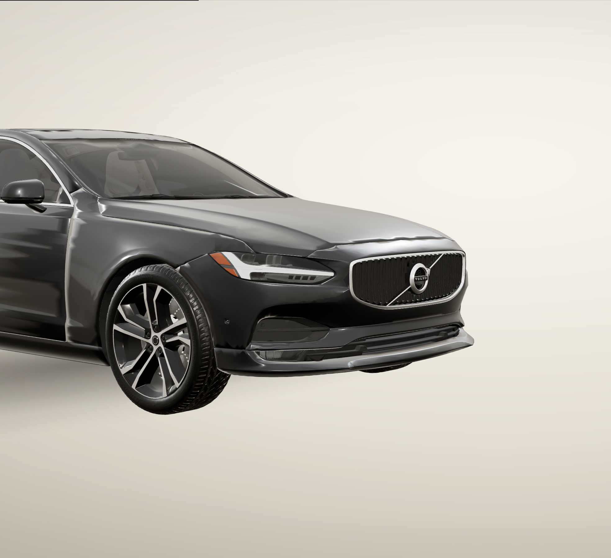
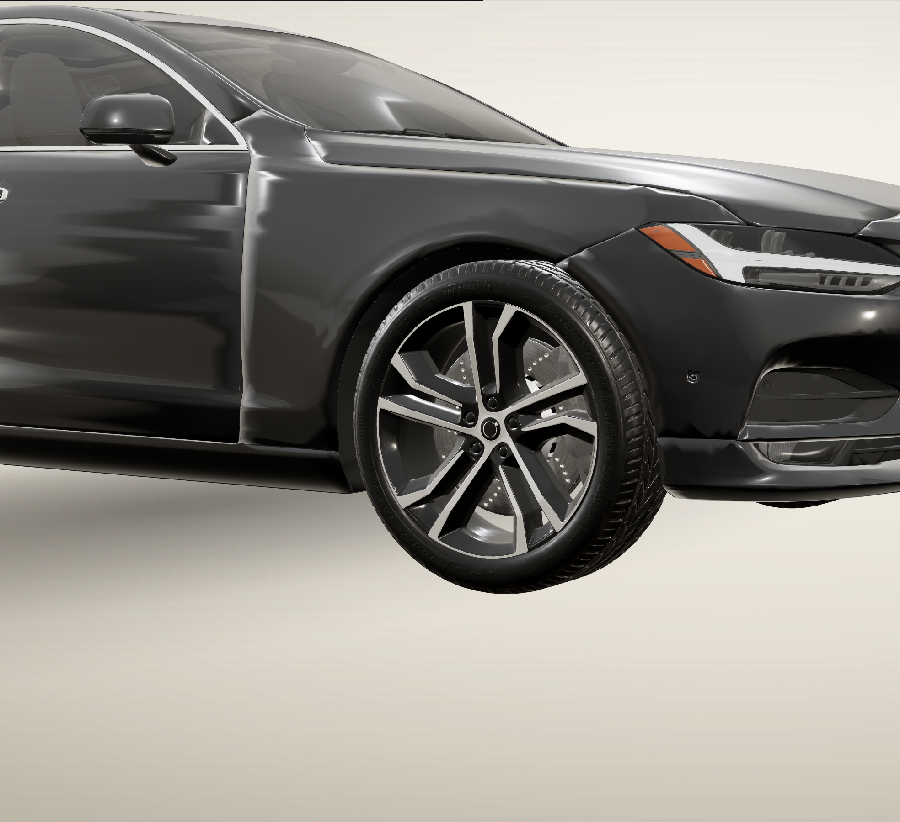
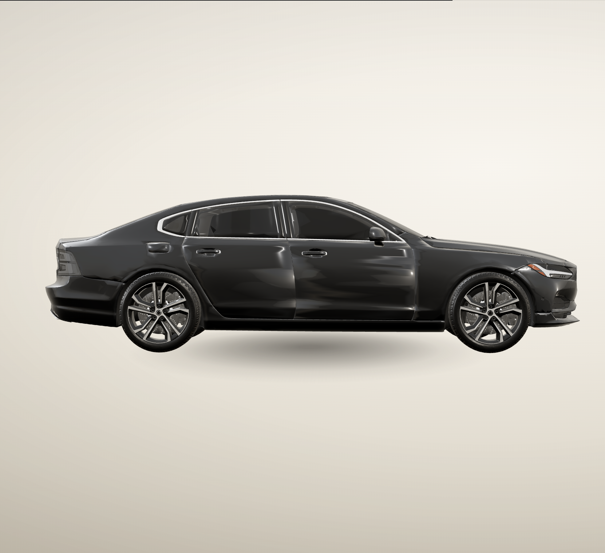
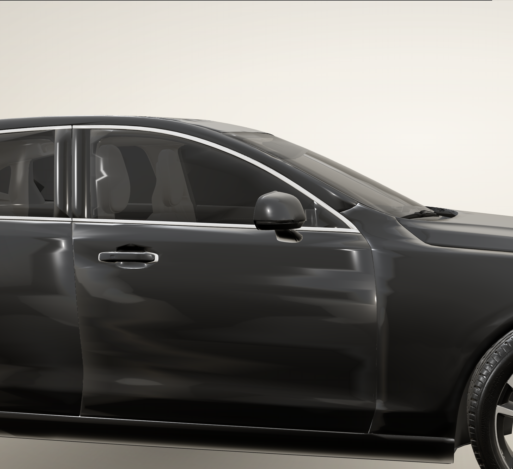
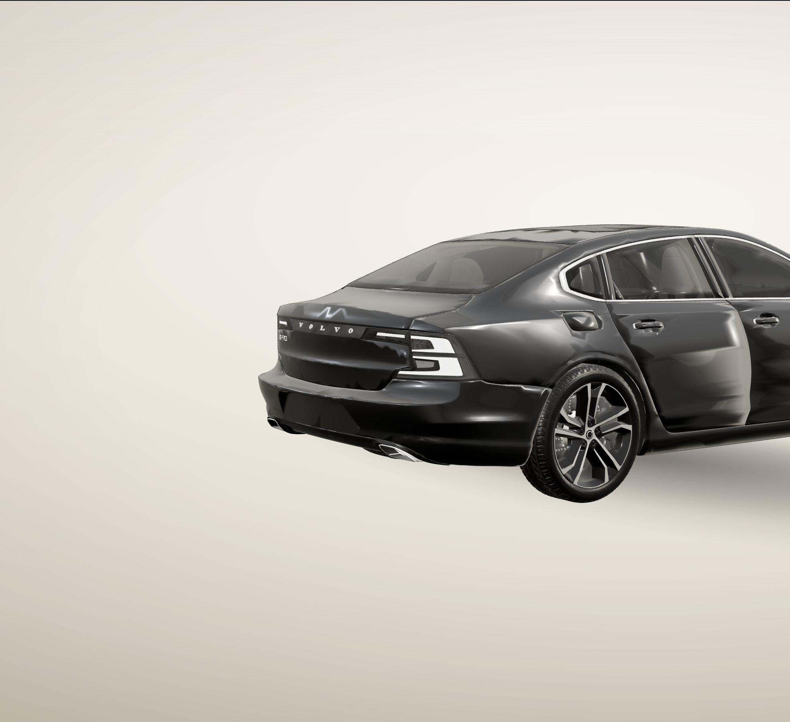

2026 华灿奖 数字媒体设计 / 交互界面VOLVO S90 — DIGITAL ATELIER
NARRATIVE / 02
一条时间轴，六个章节
滚动进度 t ∈ [0,1] 是唯一状态源；正向与反向都只是 t 的增减，没有第二个时间轴。

02 灯组 / LIGHT

03 轮毂 / WHEEL

04 侧面 / PROFILE

05 座舱 / CABIN

06 车尾 / REAR
0.00
0.15
0.28
0.41
0.54
0.67
0.84
1.00
01 整车
02 灯组
03 轮毂
04 侧面
05 座舱
06 车尾
EXPLORE
详情开
详情开
详情开
详情开
详情开
01线稿生长
02车模就绪
03中央揭幕
04滚动环绕
05双栏详情
06收起续行
07自由探索
可逆详情由 t 的五个区间触发；离开区间即收起，反向滚动不重置相机。
不裁车详情展开时相机不转向，只做投影平移；车身完整留在左栏，右栏留给文字。
不硬切结尾以 0.85s 位姿混合交给 Orbit；无页面切换、无二次加载、无第二个 Canvas。